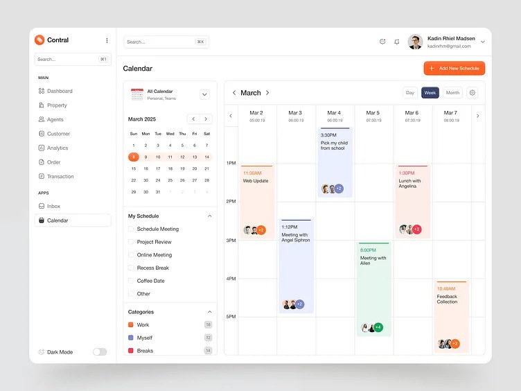

Maiores Feitos
Fundador e CEO da *Calendly*, uma das maiores plataformas de agendamento online do mundo.
Tornou o Calendly uma *startup avaliada em mais de 1 bilhão de dólares*, tornando-se um dos poucos fundadores negros de “unicórnios” tecnológicos.

Revolucionou o modo como empresas e profissionais *marcam reuniões automatizadas* com integração a e-mails e calendários.